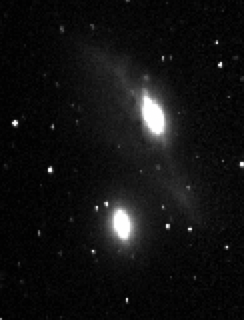

Telescope Photos
All images were taken by me.
The following images were taken remotely using the .8 m telescope at McDonald Observatory.
A Portion of The Markarian Chain - M86, M84, NGC4438, NGC4435, and other galaxies
The Markarian Eyes - NGC4435 and NGC4438
M101 - Grand Design Spiral
M101 - Multicolor

M91 - Barred Spiral
M86 - Elliptical

M84 - Lenticular

NGC4388 - Spiral Galaxy
NGC4402 - Edge-on Spiral Galaxy
The following image was taken using a Nikon D7000.
Full Moon on Halloween 2020